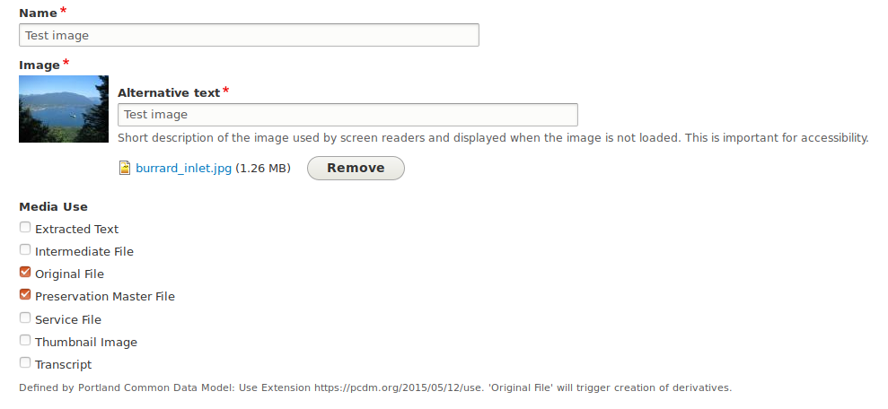
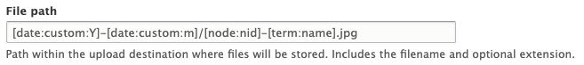

Media
Drupal 8 recognizes files (such as images, audio files, video files, etc.) but wraps each file in an intermediate structure called a "media" to allow us to attach fields to files. Drupal uses a media's fields to store information about the media's file, such as file size, width and height (for images), alt text (for images), creation date, and so on.
Compared to Islandora Legacy
In Islandora Legacy, this sort of technical metadata would have been stored as datastream properties or as additional metadata-specific datastreams. In Islandora, each datastream holds its technical metadata using an associated media entity.
Fedora will store the media's file as a binary resource and use the media's properties as the binary resource's description.
For example, creating a media with a file named test.jpg (in November 2019) will create
a Fedora binary resource of the file accessible at /fcrepo/rest/2019-11/test.jpg
with the media's fields accessible at /fcrepo/rest/2019-11/test.jpg/fcr:metadata.
Media types¶
Islandora Core Feature and the Islandora Starter Site make use of the media types provided by the Standard Drupal installation (Video, Audio, etc). The file extensions allowed by each media type have been configured at the Drupal level. It is possible to create your own media types, and/or to edit the allowed field types and functionality of the existing media types. However, with Islandora Starter Site, the Image media type only allows .png, .gif, .jpg or .jpeg files. Many large images such as TIFFs (.tiff files) and JP2s (.jp2) must be added in the File media type instead of Image.
Media revisions¶
The metadata associated with a file can be updated by clicking the Edit tab while on the media's page and clicking Save.
The Create new revision checkbox is selected by default which will prompt Fedora to make a new version of the media's metadata before updating its resource record. A message can be added to the revision which is stored in Drupal but is not currently saved in Fedora.
Using the Media form to replace an existing file does not behave as expected.¶
The media edit form allows a user to remove a file and replace it with a new one. However, because of the relationship Islandora creates between a file and its media, the effects of removing a file and uploading a new one are not intuitive.
First, the remove button removes the file's reference on the media but does not delete the file, which, if in Fedora, will remain in Fedora.
Second, because Drupal does not want users to reuse a file path uploading a file, even with the same name in the same month, Drupal will rename the file for you. This will result in a new binary resource in Fedora, rather than replacing the existing resource, so the file's URI in Fedora will change
Third, the metadata synced from the Media into Fedora at [old Fedora URI]/fcr:metadata will remain in Fedora, but the metadata in the Media will also be synced into Fedora at [new Fedora URI]/fcr:metadata. There will be no way for the metadata in Fedora describing the file at the old Fedora URI to be edited.
Removing Media with Actions
To completely delete a file and its metadata from Fedora and Drupal, run the "Delete media and file(s) action" after selecting the Media in the general media list (/admin/content/media). This will cause the paths to the file and its metadata in Fedora to return 404s.
Replacing Media via REST
It is possible to use Islandora's REST interface to replace Media and Files.
Media ownership¶
Islandora objects can have any number of media associated with them. Media store a reference to the resource node they belong to using a special field, "Media Of". By changing this field's value, you can change which resource node owns the media, and therefore, where it gets displayed or managed.
Compared to Islandora Legacy
The direction of the relationship between objects and datastreams is reversed when compared to Islandora 7. Generally speaking, objects are unaware of their datastreams, and it's a Drupal view that lists datastreams for an object.
Media use¶
Islandora media express their intended use with a special "Media Use" field, which accepts taxonomy terms from the "Media Usage" vocabulary. Because the Media Usage vocabulary is an ordinary Drupal vocabulary, Islandora site administrators can create additional terms, and in turn, these local terms can be used to identify media that have some custom local purpose. However, most of the default set of "Media Use" terms are taken from the PCDM Use Extension vocabulary:

Compared to Islandora Legacy
Terms from the Media Usage vocabulary are very similar to DSIDs in Islandora Legacy. The only difference is that a DSID is immutable, but a media's usage can be changed at any time through the media's edit form.
Derivatives¶
Islandora generates derivatives based on the Media Use term selected for a Media and the Model of the node that owns it. All of this is configurable using Context.
By default, derivatives are generated from Media with the "Original Files" term selected. When an Original File is uploaded, if the node that owns it has an "Image" model, image derivatives are created. If it's a "Video", then video derivatives are generated, etc...
By default, derivatives are created with a path determined by the current year, current month, the associated resource node' identifier
assigned by Drupal, and the type of derivative. For example, a resource node
found at node/2 with a service file media generated in October 2019 will have the path "2019-10/2-Service File.jpg".
Naming conventions can be configured by editing each derivative action's File path settings.

Within a node's media tab, you can see all of its media, including derivatives, listed along with their usage. For example, from the Original File, a lower quality "Service File" and a smaller "Thumbnail Image" file were generated.

For more information on how to configure derivatives, see the section on Context.
Multi-File Media¶
An alternate method of using Media to store files and derivatives is known as "multi-file" or multifile media. This method allows a single resource node to have multiple "Original Files" or "Preservation Masters". This method was implemented by UPEI's Research Data Management project, to represent datasets that may include multiple important files that require equal preservation treatment and derivatives (such as a spreadsheet and accompanying data dictionary), while being described by a single set of descriptive metadata.
There are no multi-file media bundles that currently ship with Islandora. The following recipe describes how to set up multi-file media:
- On an existing or new Media bundle that already has a main storage field (e.g. field_media_image or field_media_audio_file), add additional fields to hold derivatives. They need to be "File"-type fields. The field names should indicate the "Media use". Set up as many as you need, for example, Thumbnail, Service File, Extracted text, etc. Note that the "Media Use" field is no longer relevant for multi-file media bundles, as a single media instance of this type contains all "Media Uses" (e.g. derivatives) in different fields.
- Create a derivative Action that uses one of the two existing multi-file media base actions: "Generate a Derivative File For Media Attachment" or "Generate a Derivative Image For Media Attachment". This is where you configure which queue it goes to (which derivative-creating program runs), which field the resulting file ends up in, and potentially which additional arguments to pass to the microservice.
- Configure Contexts to trigger the Action to create derivatives. If using a combination of standard and multi-file media in your repository, ensure the Contexts include appropriate filtering Conditions. Add a Derivative reaction and select the Action you created in the previous step.
- Configure your resource node to display its (potentially multiple) files as desired. This may involve creating a view of media attached to the current node, and displaying the Service File (or Thumbnail, etc.) field of the media, then setting the view block to appear on the node page.
A video tutorial explaining how to configure multi-file Media is available under the following URL: https://www.youtube.com/watch?v=3U6tBvD8oJY